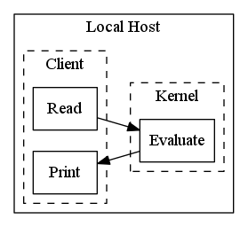

IPython and the IPython Family
Christopher Kotfila
INF Brown Bag- Spring 2015
ckotfila@albany.edu
Context
Who am I?
Why this presentation?
Evangelism
Opportunity
Start at the End
Reduce the hassle
Tell stories with data
Learn by doing
(almost) Classroom Ready
Never hit a ceiling
Graph generated in python of course
from matplotlib import pyplot as plt import math import os pts = range(1,100) plt.plot(pts, [n**2.3 for n in range(1,100)], label="Python & IPython") plt.plot(pts, [400 * math.log(n) for n in pts], label="Most other tools") plt.legend(loc=2) plt.ylim([0,10000]) plt.xlabel("Investment") plt.ylabel("Capabilities") plt.title("Investment vs. Capabilities") plt.savefig(os.getcwd() + "/.publication/ipython-brownbag/img/plt.png")
Framing the problem
Programming is hard
FALSE!
Engagement
What are the roadblocks to engaged programming?
Feeling overwhelmed
where to start?
Cognitive overload
wait where am I?
lack of eary success
lack of empowerment
Programming is hard
for students it shouldn't have to start hard
Programming is hard for faculty
Programming Environments
Scalability
Getting students to "Wow…"
IPython Notebook
History
The Python REPL
The IPython REPL
Improving the REPL by ignoring your dissertation
Client/Kernel Architecture
Different Kinds of Clients
The Power of Client/Kernel Architecture

Live Coding
(almost always a bad idea)
Lets do it anyways!
An Example Notebook Server
Blogging, Tutorials and Books
NBViewer
Learn by doing
Widgets & Simulation
What does "Almost" classroom ready mean?
IPython's Roots
Project Jupytr
Jupytr is happening right now
Solving the problem
Direct Impact?
Student
Browser and an internet connection
Instructor
Only need to setup/install a single instance